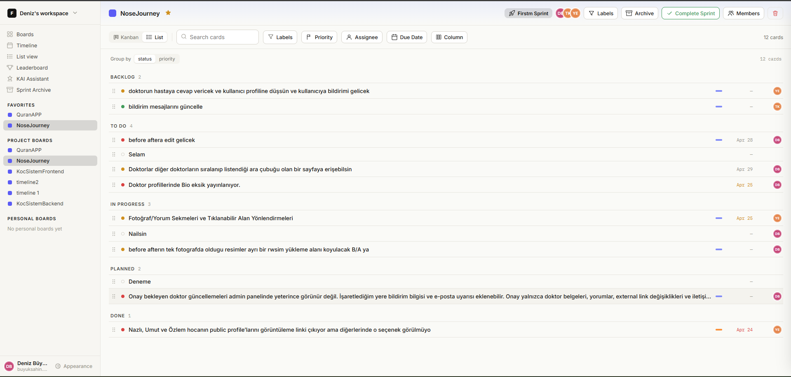
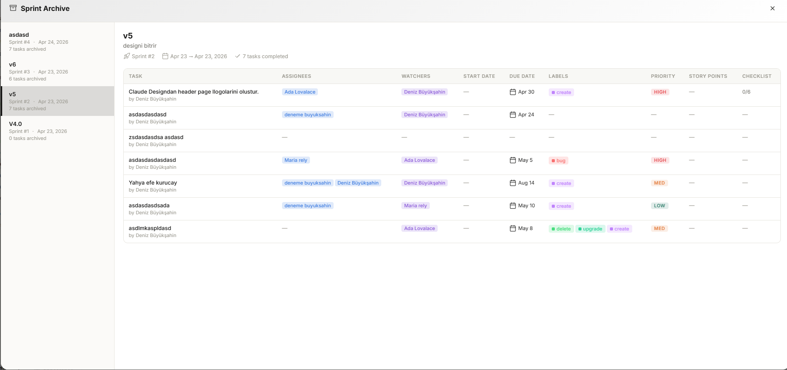

Kanban, timeline, list view, leaderboard ve KAI AI asistanı — hepsi tek bir yerde, karmaşa yok. 2 ile 12 kişilik yazılım ekiplerinin birlikte nefes almasını sağlayan sıcak, sade bir tahta.
Kanban, timeline, list view, leaderboard and the KAI assistant — all in one warm, uncluttered board. Built for software teams between 2 and 12 people who want to breathe while they ship.
Kanban ile yakın planı, timeline ile uzak planı, list ile her şeyi tek ekranda gör. Leaderboard tatlı bir motivasyon, KAI ise sürekli yedeğinde duran AI çifti.
Kanban for the near plan, timeline for the far plan, list for everything at once. Leaderboard for gentle momentum, KAI for an AI pair that has your back.
Backlog · To do · In progress · Planned · Done · Cancelled. Sütun başlıklarını değiştir, sprint bitince tek tıkla arşive gönder.
Backlog · To do · In progress · Planned · Done · Cancelled. Rename columns on the fly and archive a finished sprint with one click.
Tüm projeleri üst üste görüntüle, bağımlılıkları çiz, bitişleri kaydır.
All projects on one scrollable timeline — draw dependencies, nudge deadlines.
Status ve priority'e göre grupla, assignee, due date ve label'a göre filtrele — sprint'teki yoğunluğu anında oku.
Group by status and priority, filter by assignee, due date and label — read the pulse of a sprint instantly.
Story point totalleri, kim ne kadar aktif, kim bitirdi — baskı değil ritim.
Story points, who's active, who shipped — not pressure, just rhythm.
Complete Sprint'e bastığında v1, v2, v3... her şey arşivde, tam hikayesiyle korunur.
Hit Complete Sprint and v1, v2, v3… everything stays in the archive with its full story.
Tahta hakkında sor, görev oluştur, özet al. Tek bir sohbet kutusundan.
Ask about your board, create tasks, get summaries. One little chat.
Workspace'ine gir ve + Team board'a bas. QuranAPP, NoseJourney, KocSistem… her proje kendi tahtası.
Open your workspace and hit + Team board. Every project — QuranAPP, NoseJourney, KocSistem — lives on its own board.
Her kartta assignee, due date, priority, label ve checklist. Sütunlar arasında sürükleyerek akışı değiştir.
Each card has assignee, due date, priority, labels and checklist. Drag across columns to change the flow.
Tüm projeleri üst üste görüntüle. Bağımlılıkları çiz, çakışan haftaları fark et, son teslimleri kaydır.
See every project stacked. Draw dependencies, spot overlapping weeks, drag deadlines.
Sağ alttaki sohbetten "bu sprint'te kim tıkanmış?" de. KAI board'u okuyup anlaşılır bir cevap verir.
In the bottom-right chat, ask "who's stuck this sprint?" KAI reads the board and answers clearly.
Complete Sprint'e bas → v5 arşive düşer. Story point'ler leaderboard'da, herkes kendi hızını görür.
Hit Complete Sprint → v5 lands in the archive. Story points show on the leaderboard; everyone sees their pace.
Kartları sütunlar arasında sürükle. Tab'larda kanban, timeline ve list arasında geç. Değişikliklerin kaybolur — uygulamayla aynı değil, ruhuyla aynı.
Drag cards between columns. Switch kanban, timeline and list tabs. Your changes won't stick — same spirit as the real app, not the same database.
KAI, workspace'indeki kartları, assignee'leri, priority'leri ve sprint context'ini bilir. Başka tab açmadan sormak istediğini sor.
KAI knows the cards, assignees, priorities and sprint context in your workspace. Ask it anything without opening another tab.
In progress'te bekleyen, geç kalmış kartları isim isim listeler.
Lists the stuck, overdue cards card by card — with names.
Doğru board'da, doğru kolonda, assignee bile önerilmiş şekilde oluşturur.
Creates them on the right board, right column, with suggested assignees.
Sprint arşivinden çeker: tamamlanan, iptal, story point dağılımı, öne çıkan notlar.
Pulls from the sprint archive: completed, cancelled, story point split, notable notes.


Workspace'ini kur, ilk tahtanı aç, KAI'yi arkadaş edin. 3 dakika sürer.
Spin up a workspace, open your first board, say hi to KAI. Takes 3 minutes.